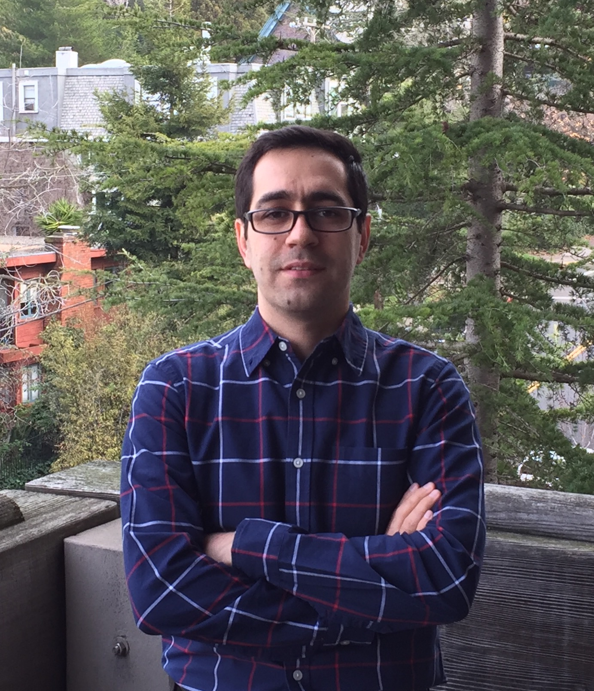

|
Mehran Mirramezani
|
 |
Mehran Mirramezani
m.mirramezani@berkeley.edu
|
About Me
I am an incoming assistant professor in the Mechanical and Aerospace Engineering Department at North Carolina State University, beginning in January 2025.
My research interests broadly lie at the intersection of computational mechanics and scientific machine learning for modern engineering problem-solving and effective decision-making through artificial intelligence across a wide range of applications, including: health and bioscience, design and materials, digital twins, etc.
I was formerly a
postdoc in the Laboratory for Intelligent Probabilistic Systems in Computer Science Department at Princeton University, where I was awarded an NSF Computing Innovation Fellowship.
I received my PhD in the Mechanical Engineering Department at UC Berkeley, where I concurrently completed an MA degree in the Department of Mathematics. My PhD research was generously supported by NIH, AHA, UC Berkeley Graduate Division Block Grant Award, and UC Berkeley William S. Floyd Jr. Fellowship.
Previously, I obtained an MS and BA in Mechanical Engineering from Isfahan University of Technology.
Selected Works
Diffusion Forcing: Next-token Prediction Meets Full-Sequence Diffusion
Boyuan Chen, Diego Marti Monso, Yilun Du, Max Simchowitz, Russ Tedrake, Vincent Sitzmann.
Under Submission, 2024.
Provable Guarantees for Generative Behavior Cloning: Bridging Low-Level Stability and High-Level Behavior
Adam Block*, Ali Jadbabaie, Daniel Pfrommer*, Max Simchowitz*, Russ Tedrake. Neurips, 2023. (* denotes equal contribution)
Former title, currently used by Google Scholar: "Imitating Complex Behavior: Bridging Low-Level Stability and High-Level Behavior"
Statistical Learning under Heterogeneous Distribution Shift
Max Simchowitz, Anurag Ajay, Pulkit Agrawal, Akshay Krishnamurthy. ICML, 2023.
Do Differentiable Simulators Give Better Policy Gradients?
H.J. Terry Suh, Max Simchowitz, Kaiqing Zhang, Russ Tedrake. ICML, Outstanding Paper Award, 2022.
Naive Exploration is Optimal for Online LQR
Max Simchowitz, Dylan Foster. ICML, 2020.
Improper Learning for Nonstochastic Control
Max Simchowitz, Karan Singh, Elad Hazan. COLT, 2020.
Non-Asymptotic Gap-Dependent Regret Bounds for Tabular MDPs
Max Simchowitz, Kevin Jamieson. NeurIPS, 2019.
Learning Without Mixing: Towards A Sharp Analysis of Linear System Identification
Max Simchowitz, Horia Mania, Stephen Tu, Benjamin Recht, Michael I. Jordan. COLT, 2018.
Education & Employment
Teaching
CS 189/289A, Introduction to Machine Learning, UC Berkeley Fall 2018 (TA).
EE227C, Convex Optimization and Approximation, UC Berkeley, Spring 2018 (TA). Link for course notes.
|